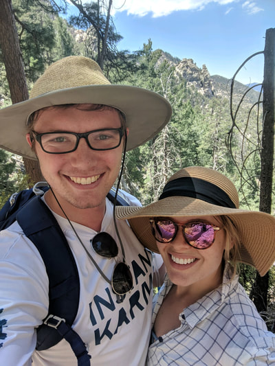
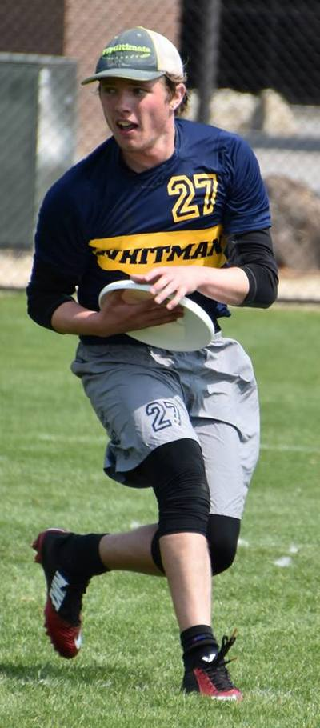
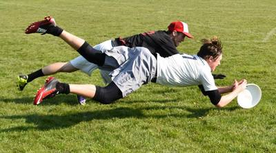
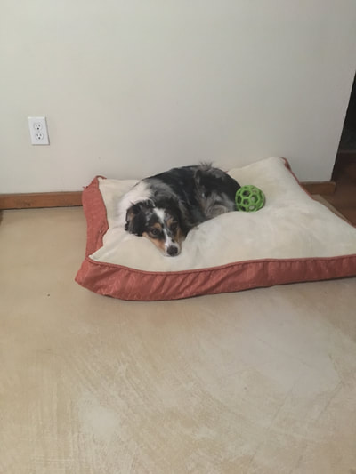
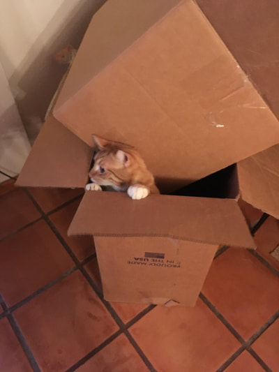

<font color="white">
 <h1>A bit more about me</h1>
    <p>I got my Bachelor's degree in physics and astronomy from Whitman College in 2015.  I was lucky to have many phenomenal teachers and mentors there who propelled me forward to where I am now (big shoutouts to Moira Gresham, Andrea Dobson, and Nathaniel Paust).  The summer between junior and senior year I participated in the KNAC (Keck Northeastern Astronomy Consortium) REU program where I worked with Desika Narayanan at Haverford College on some problems related to galaxy formation.  
    </p>
<h2>Fun</h2>
<p>When I'm not at work I enjoy playing ultimate frisbee, being outdoors in Arizona, or lounging around with the various animals I have in my house.  Some pictures of these things below:
</p>
</font>












<body background="images/papyrus-dark.png"></body>
